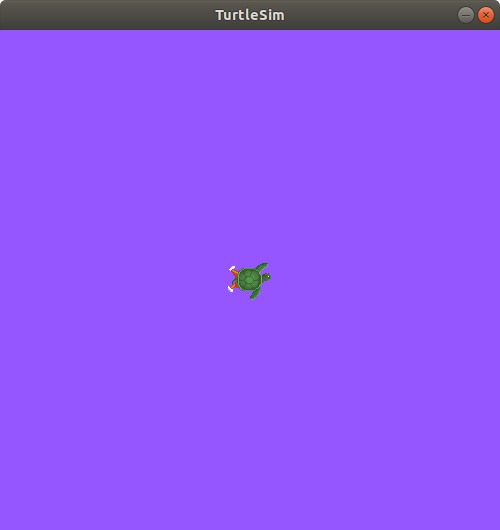

理解参数 [4200]
目标： 学习如何在 ROS 2 中获取、设置、保存和重新加载参数。 [4201]
教程级别: 初学者 [3951]
时间： 5分钟 [3557]
内容 [3277]
背景 [3072]
参数是节点的配置值。你可以将参数视为节点的设置。节点可以将参数存储为整数、浮点数、布尔值、字符串和列表。在ROS 2中，每个节点都维护其自己的参数。有关参数的更多背景信息，请参阅：概念文档。 [4202]
先决条件 [3124]
本教程使用 turtlesim 包。 [4119]
像往常一样，在:doc:每个新开的终端中 <../Configuring-ROS2-Environment>`都不要忘记加载ROS 2。 `[4070]
任务 [3282]
1 设置 [4071]
启动两个 turtlesim 节点，/turtlesim 和 /teleop_turtle。 [4120]
打开一个新的终端并运行： [3132]
ros2 run turtlesim turtlesim_node
打开另一个终端并运行： [4073]
ros2 run turtlesim turtle_teleop_key
2 ros2 param list [4203]
要查看属于你的节点的参数，打开一个新的终端并输入以下命令： [4204]
ros2 param list
您将看到节点命名空间``/teleop_turtle``和``/turtlesim``，然后是每个节点的参数： [4205]
/teleop_turtle:
qos_overrides./parameter_events.publisher.depth
qos_overrides./parameter_events.publisher.durability
qos_overrides./parameter_events.publisher.history
qos_overrides./parameter_events.publisher.reliability
scale_angular
scale_linear
use_sim_time
/turtlesim:
background_b
background_g
background_r
qos_overrides./parameter_events.publisher.depth
qos_overrides./parameter_events.publisher.durability
qos_overrides./parameter_events.publisher.history
qos_overrides./parameter_events.publisher.reliability
use_sim_time
每个节点都有参数``use_sim_time``；它不是 turtlesim 特有的。 [4206]
根据它们的名称，看起来``/turtlesim``的参数使用RGB颜色值来确定 turtlesim 窗口的背景色。 [4207]
要确定参数的类型，您可以使用``ros2 param get``命令。 [4208]
3 ros2 param get [4209]
要显示参数的类型和当前值，请使用以下命令： [4210]
ros2 param get <node_name> <parameter_name>
让我们找出``/turtlesim``的参数``background_g``的当前值： [4211]
ros2 param get /turtlesim background_g
将返回该值： [4212]
Integer value is: 86
现在你知道 background_g 保存了一个整数值。 [4213]
如果你对 background_r 和 background_b 运行相同的命令，你将分别得到值 69 和 255。 [4214]
运行 ros2 param set 命令来执行第 4 步。 [4215]
要在运行时更改参数的值，请使用以下命令： [4216]
ros2 param set <node_name> <parameter_name> <value>
让我们改变 /turtlesim 的背景颜色: [4217]
ros2 param set /turtlesim background_r 150
你的终端应该返回以下信息: [4218]
Set parameter successful
然后你的 turtlesim 窗口的背景颜色会改变: [4219]
使用 set 命令设置参数只会在当前会话中生效，而不是永久生效。然而，你可以保存你的设置，并在下次启动节点时重新加载。 [4220]
5 ros2 param dump [4221]
你可以使用以下命令查看节点的所有当前参数值： [4222]
ros2 param dump <node_name>
该命令默认将参数值打印到标准输出（stdout），但你也可以将参数值重定向到文件中以便以后使用。要将当前``/turtlesim``参数的配置保存到文件``turtlesim.yaml``中，请执行以下命令： [4223]
ros2 param dump /turtlesim > turtlesim.yaml
你会在当前工作目录中找到一个新的文件，如果你打开这个文件，你会看到以下内容： [4224]
/turtlesim:
ros__parameters:
background_b: 255
background_g: 86
background_r: 150
qos_overrides:
/parameter_events:
publisher:
depth: 1000
durability: volatile
history: keep_last
reliability: reliable
use_sim_time: false
将参数转储非常方便，如果您希望将来重新加载具有相同参数的节点。 [4225]
6 ros2 param load [4226]
您可以使用以下命令将参数从文件加载到当前运行的节点： [4227]
ros2 param load <node_name> <parameter_file>
要将使用``ros2 param dump``生成的``turtlesim.yaml``文件加载到``/turtlesim``节点的参数中，请输入以下命令： [4228]
ros2 param load /turtlesim turtlesim.yaml
终端将返回以下消息: [4157]
Set parameter background_b successful
Set parameter background_g successful
Set parameter background_r successful
Set parameter qos_overrides./parameter_events.publisher.depth failed: parameter 'qos_overrides./parameter_events.publisher.depth' cannot be set because it is read-only
Set parameter qos_overrides./parameter_events.publisher.durability failed: parameter 'qos_overrides./parameter_events.publisher.durability' cannot be set because it is read-only
Set parameter qos_overrides./parameter_events.publisher.history failed: parameter 'qos_overrides./parameter_events.publisher.history' cannot be set because it is read-only
Set parameter qos_overrides./parameter_events.publisher.reliability failed: parameter 'qos_overrides./parameter_events.publisher.reliability' cannot be set because it is read-only
Set parameter use_sim_time successful
注解
只读参数只能在启动时进行修改，不能在之后进行修改，这就是为什么“qos_overrides”参数会有一些警告。 [4229]
7 在节点启动时加载参数文件 [4230]
要使用保存的参数值启动相同的节点，请使用以下命令： [4231]
ros2 run <package_name> <executable_name> --ros-args --params-file <file_name>
这是您启动turtlesim时经常使用的相同命令，只需添加``--ros-args``和``--params-file``标志，然后加上要加载的文件名。 [4232]
停止正在运行的turtlesim节点，并尝试使用保存的参数重新加载它，使用命令： [4233]
ros2 run turtlesim turtlesim_node --ros-args --params-file turtlesim.yaml
turtlesim窗口应该像往常一样显示，但是背景将是您之前设置的紫色背景。 [4234]
注解
当在节点启动时使用参数文件时，包括只读参数在内的所有参数都将被更新。 [4235]